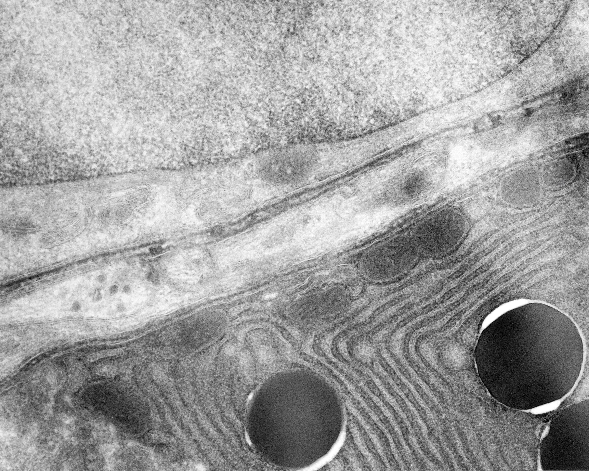
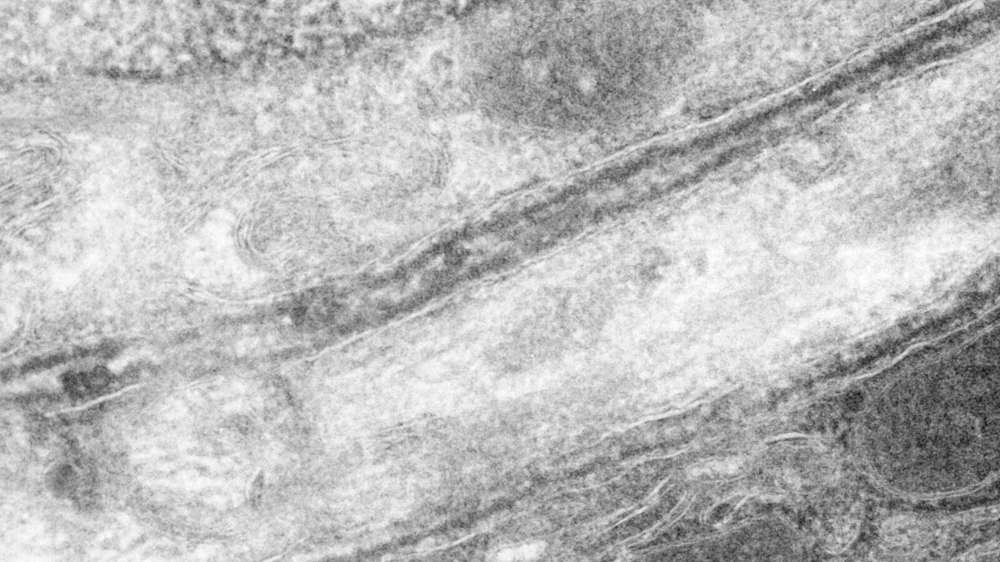
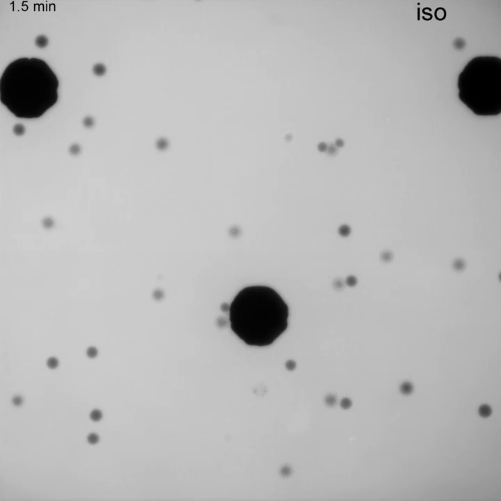

Cell boundaries and osmotic response
A prepared electron micrograph shows neighboring-cell boundary context. A separate fluorescence-exclusion movie records HeLa cells under two source-labelled bath changes. Their specimens, scales and imaging contrasts differ; no registered cell-to-membrane zoom connects them.
Keep the boundary in its cellular context

Reading key: the owning record identifies two cells, part of a nucleus in the upper cell and smooth ER/secretory profiles in the lower cell. The intercellular boundary and intracellular membranous profiles occupy different contexts. Original orientation is retained; no new anatomical leader is added.
Ultrathin cryosection TEM. Species, tissue, normal/pathological state, section thickness, fixation/staining chemistry and physical calibration are unreported. Electron contrast records this preparation; it is not a live view or natural tissue color.
Mike Kayser / Wellcome Collection, Smooth ER, cell membrane and nucleus, B0002402 · CC BY 4.0. Complete 3546 × 2843 native JPEG unchanged, including all source context; no scale bar invented.
Two neighboring membranes are not two leaflets

Interpretation: two neighboring plasma membranes are two membranes, not the two molecular leaflets of one phospholipid bilayer. Dark TEM densities do not identify a channel, pump, aquaporin, lipid head group or transport pore. Membrane thickness cannot be measured here without calibration.
Same source field; crop coordinates (800,900–2400,1800) in the original 3546 × 2843 image. This lossless decoded-pixel crop retains native detail without resampling, denoising or recoloring. Internal ER belongs to a separate intracellular compartment; the image does not supply general molecular bilayer geometry.
Mike Kayser / Wellcome Collection B0002402 · CC BY 4.0. Declared 1600 × 900 detail crop; complete original context remains available.
Observe the response to source-labelled bath changes
iso 346 → hypo 177 mOsm
Water added to culture medium
iso 346 → hyper 916 mOsm
10% PEG400, as labelled
Source clocks are in minutes. Title cards and a segment reset interrupt the timebase. The 9.97-second publication file is strongly accelerated; 30 encoded frames/s is not the capture interval. “20×” is objective magnification, not playback speed or a physical scale.

The player starts paused and does not loop. Native pixels allows focused arrow-key panning; Fit player changes display size only. Steps and the seek readout use publication-file time, not acquisition intervals. Poster: representative pre-shock source 1.5 min frame; playback begins with the original title card.
Why cells appear dark: cells exclude extracellular fluorescent dextran. This is fluorescence exclusion (FXm), not a membrane stain. The study’s volume estimates use calibrated integrated fluorescence deficit; a projected dark footprint alone is not a measured three-dimensional volume. Large irregular dark regions should not automatically be counted as single isolated cells.
Ordered observations
- First segment: source 1.5 min is labelled iso; source 6 min and 14 min are labelled hypo. Exclusion profiles change after the labelled transition.
- Title card and clock reset: the hyper segment is a separately presented condition, not a documented uninterrupted treatment/recovery trajectory of one tracked cell.
- Second segment: source 2.5 min is labelled iso; 13.5 min and 19.5 min are labelled hyper. The movie does not resolve water molecules, their membrane paths or transporter identity.
Venkova et al. (2022), A mechano-osmotic feedback couples cell volume to the rate of cell deformation, Figure 3—video 1, DOI 10.7554/eLife.72381 · CC BY 4.0. Complete 720 × 720 publisher MP4 unchanged, no audio. Human cervical-cancer cell line on PLL-coated glass, not an erythrocyte or untreated normal tissue. No source physical scale bar is identified.
Open complete original movieOpen native representative frameSource and timing record
Assay preparation and measurement limits
Cells were maintained at 37°C/5% CO₂. The osmotic protocol uses 0.01% PLL-coated chambers, trypsin detachment, extracellular 10 kDa fluorescent dextran and rapid medium exchange, typically beginning 2.5 min after acquisition starts. The methods describe Zeiss Z1 Observer epi-fluorescence with 20× NA0.4; 20× NA0.8 is specifically assigned to stream movies and is not assumed here. The exact fluorophore and original capture interval for this grayscale file are not independently specified. No 1 min/30 ms interval is borrowed from a different protocol.
The bath labels are reproduced literally as mOsm, not converted into an inferred salt recipe. Whole-cell osmotic response is distinct from a molecular pump cycle or a direct visual record of passive water permeation. The movie does not establish general bilayer leaflets, pore geometry, ATP counts or intracellular solute concentration.